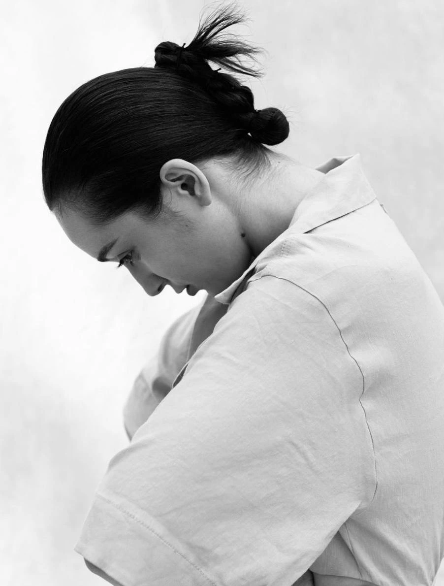

Artist · Actress · Storyteller
Maryia
Zaloznaya
Born in Belarus and shaped by a life lived across the world, Maryia Zaloznaya is an artist and actress whose practice begins where language ends. From Minsk to Sochi, Warsaw, Barcelona, Tenerife and Los Angeles, she gathered not only images, but ways of seeing — fragments of cultures, human encounters, ruptures and rebirths.
Her work is an act of transformation. Pain is never presented as spectacle; it is carried through colour, texture and symbol until it becomes beauty, power and recognition. Each painting asks what might happen if we stopped hiding the parts of ourselves that survived.
Acting taught her to inhabit emotion. Painting taught her to give it a body. Together, these disciplines form a deeply personal visual language — sensual, psychological and unafraid — in which vulnerability becomes strength and private experience becomes something universal.
“I do not paint pain to preserve it. I transform it, so it can become freedom.”